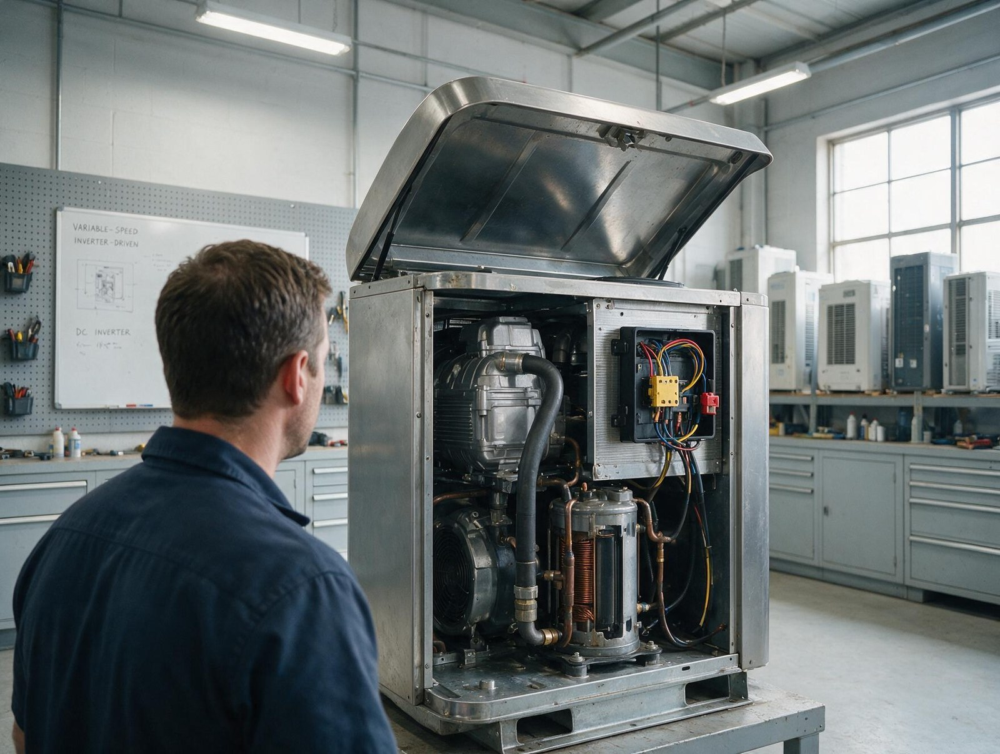
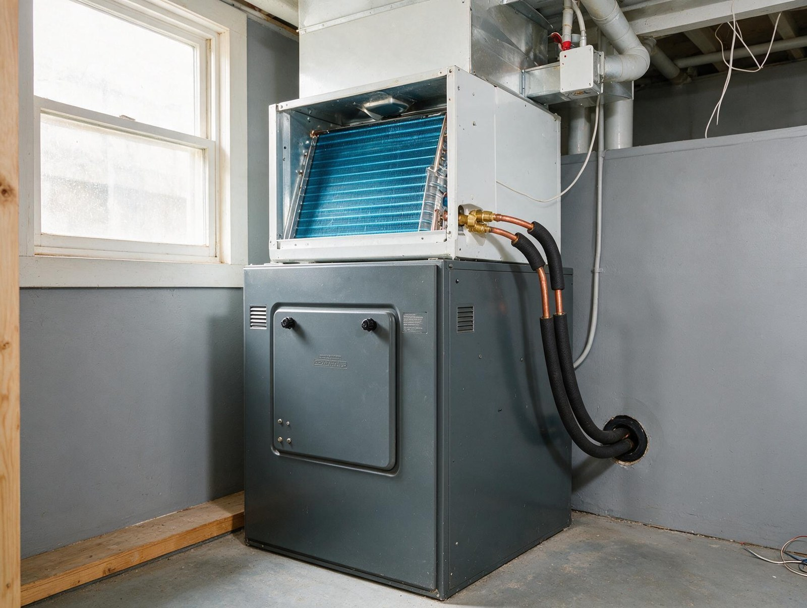

By the Editorial Team | Published: August 2026 | Last Updated: August 2026
How Dual-Fuel Hybrid Systems Combine Heat Pump Efficiency with Gas Furnace Reliability
Dual-fuel hybrid systems pair a heat pump for mild-weather heating and cooling with a gas furnace for cold-weather heating, using an outdoor temperature sensor and a smart control to switch between the two at the economically optimal point. The configuration captures the operating-cost advantage of the heat pump across most of the year while retaining the peak-hour reliability of gas for the coldest hours. It is a mature configuration that works well in mixed climates and in specific situations in warmer climates too.
This guide walks through when dual fuel makes sense, how the switchover logic works, what the equipment stack looks like, and where the configuration adds cost versus a single-technology approach. It is written for homeowners and designers deciding whether the hybrid path is worth the equipment complexity.
The Case for Dual Fuel in the Middle Climate Range
In mixed climates where heating hours span both mild and cold outdoor temperatures, neither a heat pump alone nor a gas furnace alone is optimal for the whole season. A heat pump excels above roughly 35 F but loses efficiency as temperatures drop. A gas furnace has constant efficiency but wastes fuel at mild outdoor temperatures where a heat pump could deliver the same heat at lower cost. Dual fuel runs whichever technology is cheaper at any given moment.
The typical annual result in a mixed climate: the heat pump handles 80 to 90 percent of the heating hours (mild days, shoulder season, milder cold snaps), and the gas furnace handles the remaining 10 to 20 percent (deep cold, extended cold periods, backup during heat pump defrost or malfunction). Utility bills reflect the weighted average, which is meaningfully better than either single technology alone.
How the Switchover Logic Actually Works
The control determines whether the heat pump or the furnace should run based on an outdoor temperature reading and a pre-programmed changeover setpoint. Above the setpoint, the heat pump runs. Below the setpoint, the furnace runs. Simple in concept; the setpoint calibration is where sophistication matters.

Three common calibration approaches:
- Fixed setpoint based on system balance point: the setpoint is set to the outdoor temperature at which the heat pump's capacity equals the house's design heating load. Simple and reliable but does not account for economics.
- Fixed setpoint based on economic changeover: the setpoint is set to the outdoor temperature at which the operating cost per BTU of the heat pump equals that of the furnace at current utility rates. Better economically but requires updating when rates change materially.
- Smart thermostat with rate-aware logic: some modern thermostats read utility rate structure and outdoor temperature dynamically and switch to whichever fuel is cheaper for the current conditions. Best economic result but requires compatible equipment.
What the Equipment Stack Looks Like
A dual-fuel system uses a standard heat pump outdoor unit paired with a gas furnace as the indoor equipment instead of the usual air handler. The furnace provides the blower for both heating modes and for cooling. The heat pump's refrigerant coil sits above the furnace in the supply plenum. The control panel wires the outdoor sensor and the changeover logic into the standard thermostat and furnace-heat-pump interconnection.
Physically, the mechanical closet looks nearly identical to a conventional furnace-plus-AC installation because a heat pump condenser is the same size as an AC condenser and the furnace itself replaces the air handler. The gas line, flue vent, and combustion air routing all match a standard furnace install. The additional equipment cost over a conventional furnace-plus-AC installation is modest (typically 10 to 20 percent for the heat pump upgrade over the AC).
Where Dual Fuel Loses Its Advantage
Dual fuel makes less sense at both climate extremes. In cold-dominant climates, most heating hours are in the furnace's operating window and the heat pump gets little runtime, which does not justify its cost. In warm-dominant climates, most heating hours are in the heat pump's efficient range and the furnace is a rarely-used backup, which does not justify the added combustion equipment and gas infrastructure. The sweet spot is the middle climate range where both technologies see meaningful runtime.
Dual fuel also loses its case if utility rates disfavor one fuel strongly enough. Very cheap natural gas with expensive electricity pushes the changeover setpoint high enough that the heat pump rarely runs, which negates the point of installing it. Very cheap electricity with expensive gas pushes the changeover setpoint so low that the furnace rarely runs, which negates the point of installing it. Rate stability across the equipment's 15 to 20 year life matters for the economic case.
Alternative Backup Strategies for Heat-Pump-Primary Systems
Not every heat pump installation needs gas backup. Two other backup approaches exist:
- Electric resistance strips at the air handler: standard on nearly all central heat pumps, these provide emergency heat when the heat pump cannot meet the load or during defrost cycles. Simple and low first cost but expensive to operate because resistance heating is at COP 1.0.
- Cold-climate heat pump with no backup or minimal backup: modern cold-climate variable-speed heat pumps maintain rated capacity down to zero F or lower, which eliminates the need for gas backup in many climates. Higher first cost than a standard heat pump but simpler system architecture and no gas infrastructure.
Configuration Comparison at a Glance
| Configuration | Best climate fit | First cost | Operating cost | Reliability at cold extreme |
|---|---|---|---|---|
| Standard heat pump with electric backup | Warm climates (zones 2 and 3) | Moderate | Low in warm climate | Backup runs during rare cold hours |
| Cold-climate heat pump | All climates including cold (zones 3 to 7) | Higher | Low across full range | Excellent, minimal backup needed |
| Dual-fuel hybrid (heat pump + furnace) | Mixed climates (zones 4 and 5) | Higher (two fuel systems) | Optimized across seasons | Excellent (furnace handles cold) |
| Gas furnace alone with AC | Cold-dominant climates (zones 6 and 7) | Lower | Higher in shoulder seasons | Excellent |
Frequently Asked Questions
Is a dual-fuel system more complicated to install than a conventional furnace and AC?
Modestly. The installation adds an outdoor temperature sensor, the changeover control wiring, and the heat-pump-configured outdoor unit (instead of an AC condenser). Most experienced installers handle dual fuel as routine work. The commissioning process is longer because it verifies both heating modes and the changeover behavior at multiple temperature setpoints, but the additional labor is measured in hours, not days.
How does the homeowner know if the changeover setpoint is right?
The utility bill over one heating season reveals whether the setpoint delivers the expected economics. If the heat pump seems to run more than expected during cold snaps, the setpoint may be too low. If the furnace runs during mild weather, the setpoint may be too high. Reviewing the setpoint annually against current utility rates keeps the economics tuned. Some smart thermostats do this automatically.
Can a homeowner add a heat pump to an existing gas furnace to create a dual-fuel system?
Yes, when the existing furnace and duct system are compatible. The retrofit adds a heat pump outdoor unit in place of the existing AC condenser, a heat pump coil above the furnace, and the changeover control wiring. It is a common upgrade path for homeowners looking to reduce operating costs without abandoning their gas infrastructure. The AC in most existing systems can be replaced with a heat pump condenser at similar labor cost to a standard AC replacement.
How does dual fuel affect equipment lifespan?
Dual fuel distributes wear across two heating systems, which extends the effective service life of each. The heat pump runs fewer hours than it would as the sole heating source because the furnace picks up the cold-weather hours. The furnace runs fewer hours than it would as the sole heating source because the heat pump handles the mild hours. Total system lifespan generally exceeds either technology alone.
Does the switchover logic work with any thermostat?
Most modern smart thermostats and many mid-tier programmable thermostats support dual-fuel switchover with an outdoor temperature sensor input. Older single-stage thermostats often cannot handle the switching logic natively; a dedicated changeover relay may be needed. The installer specifies compatible controls during system design.
What happens if the electricity fails during a cold-weather heating call?
The heat pump stops (no electricity for the compressor and fans), and the furnace also stops (no electricity for the blower, ignition, and controls). Neither system delivers heat during a power outage without a backup generator or battery. This is true of any electrically-controlled residential heating system, including gas-only setups with electronic ignition. Homeowners in areas with frequent outages sometimes add a whole-home battery or generator for heating continuity.
Are cold-climate heat pumps a substitute for dual fuel?
In many mixed climates, yes. A cold-climate heat pump maintains capacity down to outdoor temperatures where standard heat pumps would need gas backup, which eliminates the need for the furnace side of a dual-fuel system. First cost is higher than a standard heat pump but comparable to a dual-fuel system when the furnace and gas infrastructure costs are counted. Homeowners without existing gas service often find cold-climate heat pumps simpler than adding gas just to enable dual fuel.
Does the utility company prefer one configuration over another?
Utility companies operate incentive programs that reflect their generation mix and load-management goals. Electric utilities in most markets currently favor heat pumps and offer rebates. Gas utilities offer smaller rebates for high-efficiency furnaces. Some markets have joint programs that specifically incentivize dual fuel because it balances load between the two utility systems. Homeowners should check current program terms for their specific address before committing.
